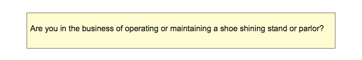
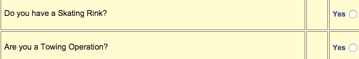

üëπ ARTSTUFF.WTF
Editor's note: I'm organizing Chillnet with Hsinyu Lin on Sunday. Come check it out. Info below.

FRI 7/28
The Border Peepshow
12noon - 6pm
The Velaslavasay Panorama
$4 - 6 donation requested
The Border Peepshows depict scenes of the San Diego/Tijuana border from 1887, 1927, 1967, and 2017, drawing on historic and contemporary photographs of the region to illuminate the shifting story of a once culturally and ecologically connected terrain. A collaborative project between Parkeology, a public art program that excavates histories from urban parks, and The Velaslavasay Panorama, the Peepshows were first displayed in Balboa Park, in the Plaza de Panama, as an public exhibit in June 2017. The Peepshows will be on view during regular open hours at the Velaslavasay Panorama July 28th thru the 30th, 2017. Also, on view at the Velaslavasay Panorama since the summer of 2007, our Effulgence of the North arctic panorama will dematerialize into the ether to make way for a grand new 360-degree installation.
LINK

SAT 7/29
Pandora's Box
The Box
11am - 9pm
FREE
Thus Saturday 11-5 we will be sharing/trading/selling everything imaginable for each other, to each other, with each other. Food, drinks, artworks, performances, massages, special stuff....As well as a talk and potluck dinner afterwards
LINK
Decentralizing The Web 003: Jennifer Moon + Alice Barker
The Mistake Room
2pm - 6pm
FREE
The Mistake Room + Decentralizing The Web present Jennifer Moon + Alice Barker in conversation on... decentralized networks... magical thinking...(◕‿-)...cryptocurrency...digital security...(◠﹏⊙✿)...malicious hardware...benevolent viruses...hacking intimacy...the revolution....decolonizing desire...internet psychics (◡‿◕✿) Followed by a tactical + tactile workshop on Scrooging 凸(¬‿¬)凸 All ages, no tech experience necessary
LINK

SUN 7/30
Chillnet
Coaxial Arts
12pm - 4pm
$5 - 10 suggested
C̷H̷I̷L̷L̷N̷E̷T̷ is a brunchtime afternoon of workshops, talks, music and crypto-bar dedicated to cybersecurity, blockchain, cyber policies, and the darknet along with other critical issues of the internet. Learn ways to protect our digital rights through secure communications, cryptocurrencies, file-trading, setting up your own dark net and other topics. Open to all. No prior experience necessary. CRYPTOBAR + Who Owns the Internet?, Death in the Internet, Interface Anxiety, Launching a Local Arts-based Cryptocurrency, encrypted email, private darknets, offline bitcoins, and much more.
LINK
Maybe all of us at once
Los Angeles Contemporary Archive
4pm - 6:30pm
FREE
For the 24 hours proceeding the public event, 12 artists-writers will be gathered together inside LACA writing new original pieces. Please come to hear and witness our unprocessed and unrehearsed words...We choose how to build time in each moment, between a lived experience and a written one, Imagine you don’t need to choose, Imagine you are being offered an opportunity to shatter time...
LINK

ABOUT
ARTSTUFF.WTF is a minimal website listing page for selected mostly DIY art (and etc) events going on around Los Angeles. It is a personal list of 4 - 6 events sent out to friends weekly, and made available online here for bookmarking and quick reference. There is an archive of past listings. Sign up to receive weekly emails. Made by Lee Tusman.